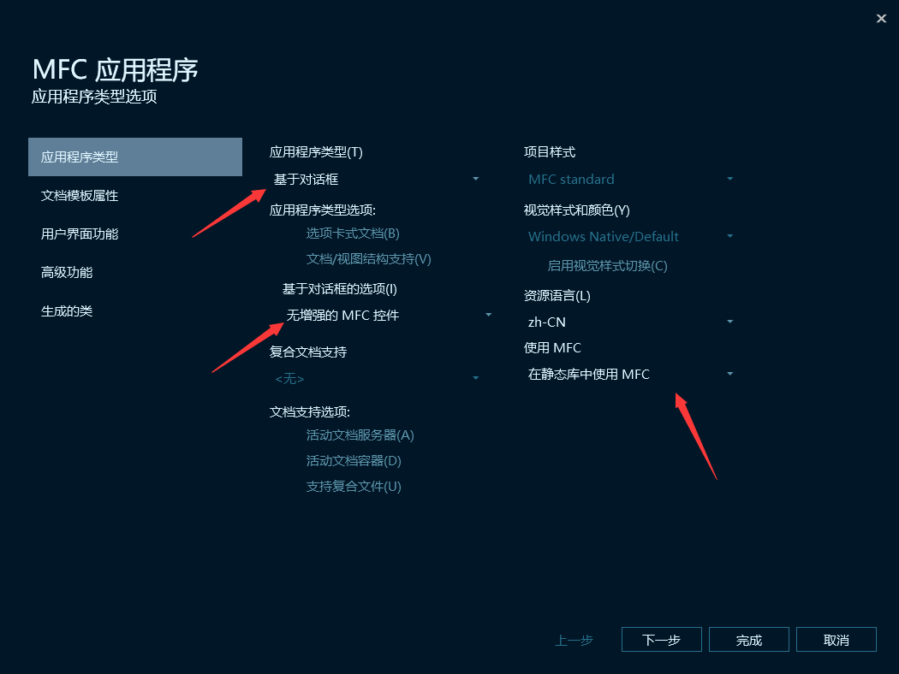
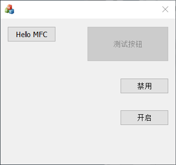
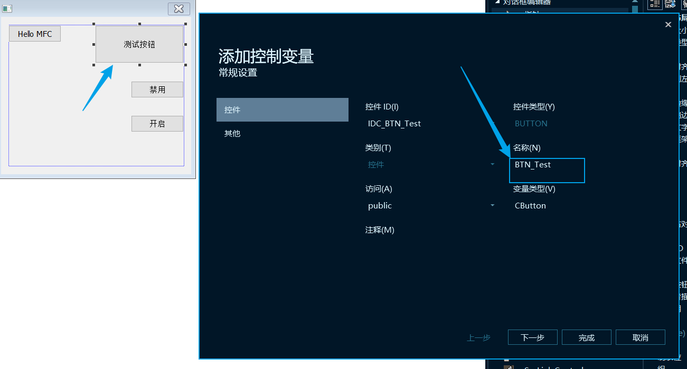
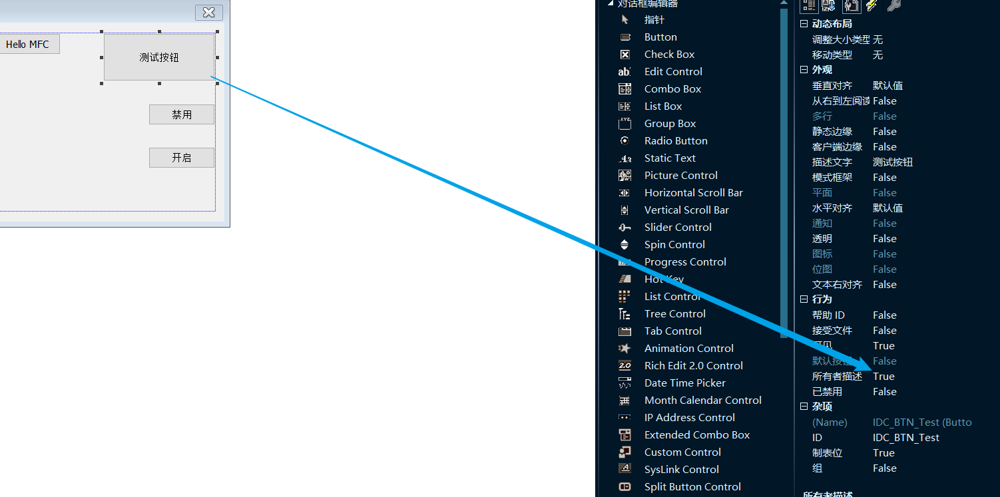
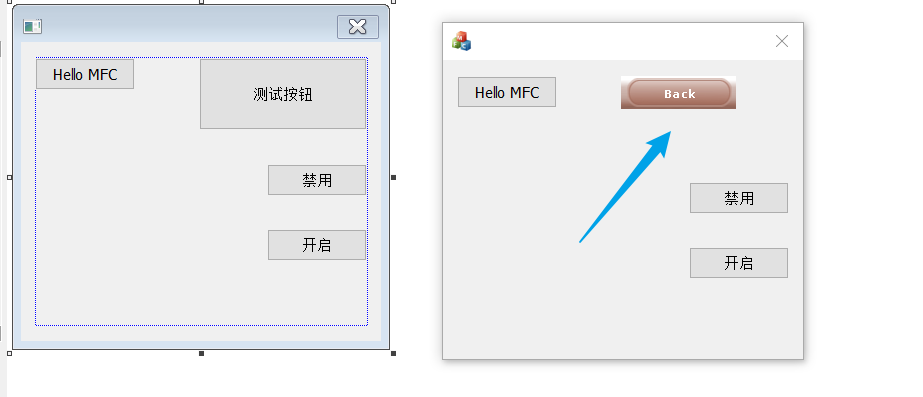

# 楔子
之前学习了 win32 的窗口编程，如今想进一步学习一下，C++ 的图形化编程。
# 创建一个 MFC 对话框工程
这里我遇到了一个问题，用 VS2019 创建 MFC 工程，对 COM 组件的调用返回了错误 HRESULT E_FAIL 上网查了些文章，按着方法也照做了，可是还是不行，后来找到了原因，是因为项目名字中有下划线……，为了保险起见，我把放 MFC 代码的文件夹也取消下划线了。
因为是初学者，暂时先设置成这样：

# button 控件
因为之前有 win32 的基础，所以只记下没有学过的一些内容。
# 禁用按钮
相关函数： EnableWindow
主要代码如下，不要在意函数名。
void CMFCCStringDlg::OnBnClickedButton3() | |
{ | |
// TODO: 在此添加控件通知处理程序代码 | |
// MFC 获取控件句柄 | |
// 此函数有两个重名的，在全局上有一个，在 MFC 中也有，我们这里调用全局的，加上全局作用域 | |
// win32 sdk api | |
HWND hButton2 = ::GetDlgItem(GetSafeHwnd(), IDC_BTN_Test); | |
if (hButton2) | |
{ | |
::EnableWindow(hButton2, FALSE); | |
} | |
} | |
void CMFCCStringDlg::OnBnClickedButton4() | |
{ | |
// TODO: 在此添加控件通知处理程序代码 | |
// 这次使用 MFC 的函数 | |
CWnd* pButtonCWnd = GetDlgItem(IDC_BTN_Test); | |
if (pButtonCWnd) | |
{ | |
pButtonCWnd->EnableWindow(TRUE); | |
//::EnableWindow(pButtonCWnd->GetSafeHwnd(), TRUE); | |
} | |
} |
点击之后变成了这样：

# 绑定控件类型变量
我们想对按钮控件启用或者禁用之前必须先获得按钮控件的窗口句柄，也就是说如果以后要对这个按钮控件进行任何操作，都得先获取他的窗口句柄，之后才能操作，也就是都得调用这句话：HWND hBtn = ::GetDlgItem (m_hWnd, IDC_BTN_1);
比较麻烦，有什么简单点的办法吗？这就需要了解绑定控件类型变量了。
选择控件对其点击右键， 选择添加变量，就会出现如下界面：

用看控件类型变量来实现上面的禁用操作：
void CMFCCStringDlg::OnBnClickedButton3() | |
{ | |
// TODO: 在此添加控件通知处理程序代码 | |
//// MFC 获取控件句柄 | |
//// 此函数有两个重名的，在全局上有一个，在 MFC 中也有，我们这里调用全局的，加上全局作用域 | |
//// win32 sdk api | |
//HWND hButton2 = ::GetDlgItem(GetSafeHwnd(), IDC_BTN_Test); | |
//if (hButton2) | |
//{ | |
// ::EnableWindow(hButton2, FALSE); | |
//} | |
BTN_Test.EnableWindow(FALSE); | |
} | |
void CMFCCStringDlg::OnBnClickedButton4() | |
{ | |
// TODO: 在此添加控件通知处理程序代码 | |
//// 这次使用 MFC 的函数 | |
//CWnd* pButtonCWnd = GetDlgItem(IDC_BTN_Test); | |
//if (pButtonCWnd) | |
//{ | |
// pButtonCWnd->EnableWindow(TRUE); | |
// //::EnableWindow(pButtonCWnd->GetSafeHwnd(), TRUE); | |
//} | |
// 有缺省值 默认为 1 | |
BTN_Test.EnableWindow(); | |
} |
# 控件的美化
简单了解一下了。
先把要设置的按钮行为属性中的 所有者描述 改为 TURE，英文是 Owner Draw。

因为要自己绘图，直接在网上用现成的了：https://www.codeproject.com/Articles/5031/Making-Cool-Button-using-Images
结果如下：
